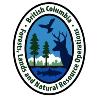

- Skills
- Cartography: ArcGIS Pro, ArcGIS Online, QGIS, PostGIS, AutoCAD Map3D, MapInfo
- Remote Sensing: LiDAR, PCI Geomatica, Google Earth Engine
- Data Analysis: FME Form, Alteryx ETL, Python, JavaScript, SQL, HTML/CSS
- Spatial Analysis: Geocoding, Network Analysis, Geo-statistics, Model Builder
- Professional Experience
-
Geomatics Co-op Student (May 2024 - Aug 2024)
BC Hydro, Dam Safety Data Technology Team
Burnaby, BC
- Define data structure domains, develop GIS datasets, and imagery representing water flow network, dam safety monitoring instruments, and operational points.
- Compile detailed guide to support GIS dataset development for Web portal, update best practices, and review standards development documents.
- Analyze latest census dataset, prepare required information using FME, and support upload to the Dam Safety ArcGIS portal.
-
Geospatial Co-op Student (Feb 2024 - May 2024)
Ministry of Forests/ Water, Land and Resource Stewardship
Nanaimo, BC
- Identify and delineate depression-based variable width riparian zones for lakes and streams using LiDAR-based DEM and ArcGIS Pro hydrology tools.
- Compare hydrologically derived buffer zones with legislated buffer zones for varied geomorphological conditions in the West/South Coast Natural Resource Region of BC.
- Provide recommendations for optimal riparian buffer zone width and prepare maps, methods, and materials for research paper publication.
-
Engineer, Systems Architecture (Apr 2020 - Dec 2022)
T-Mobile USA, Radio Network Planning
Overland Park, Kansas, USA.
- Analyzed LTE/5G radio propagation simulations, predictive heat maps to evaluate network coverage trends using Asset, Alteryx, and ArcGIS.
- Led new product introduction trials, defined the scope of work, post-processed field measurements, introduced overlay maps to validate product performance.
- Audited spatial databases and maintained data integrity using ETL tools.
-
RF Engineer II (Mar 2019 - Apr 2020)
Sprint Corporation, National Coverage and Capacity
Overland Park, Kansas, USA.
- Performed national-level geospatial analyses to create thematic maps, visualize network signal strength, and quality of service using Atoll, Alteryx, and ArcGIS.
- Proposed parameter reconfiguration recommendations based on insights derived from coverage gap patterns.
- Prepared technical documents and supported deep dive sensitivity analyses to further optimize network performance.
-
RF Engineer (Jun 2014 - Mar 2019)
Gibson Technical Services, Distributed Antenna Systems
Canton, Georgia, USA.
- Designed wireless network solutions based on user capacity and mobility using iBwave Design software.
- Analyzed client requirements, conducted site survey to measure existing network coverage, prepared preliminary designs with predictive coverage heat maps.
- Built 3D building models, pre-sales proposals, enhanced coverage results, and as-built project closeout package.
- Research
-
Public Safety LTE DAS, University of Colorado at Boulder, 2014.
A research project with Public Safety Communications Research (PSCR) to enhance Public Safety LTE 700MHz indoor coverage by collecting & visualizing existing coverage, designing in-building wireless systems, and measuring KPIs for various test scenarios such as macrocell, MIMO DAS, and cell-on-wheels system.
This research earned the “Best Capstone Award” for exceeding the state-of-the-art, and the results from this research have been published in the National Telecommunications and Information Administration (NTIA) technical report of July 2015 .